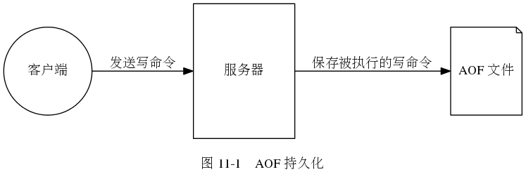

Redis 服务器在进行 AOF 持久化时， 客户端、服务器与 AOF 文件之间的互动。

AOF 文件的载入过程。
在进行 AOF 重写时， 服务器会同时将命令发送给 AOF 文件和 AOF 重写缓冲区。
第 10 章：RDB 持久化
第 12 章： 事件
Enter search terms or a module, class or function name.
![digraph {
label = "\n 图 11-2 AOF 文件载入过程"
//
node [shape = box]
start_loading [label = "服务器启动载入程序", width = 4]
create_fake_client [label = "创建伪客户端", width = 4]
load_a_command_from_aof [label = "从 AOF 文件中分析并读取出一条写命令", width = 4]
exec_command_via_fake_client [label = "使用伪客户端执行写命令"]
all_command_exec_or_not [shape = diamond, label = "AOF 文件中的所有写命令\n都已经被执行完毕？"]
done [label = "载入完毕", width = 4]
//
start_loading -> create_fake_client -> load_a_command_from_aof -> exec_command_via_fake_client -> all_command_exec_or_not;
all_command_exec_or_not -> done [label = "是"]
all_command_exec_or_not -> load_a_command_from_aof [label = "否"]
}](_images/graphviz-47f5d1e9984e43cd2871a00527cc9c7c503e6500.png)
![digraph {
label = "图 11-4 服务器同时将命令发送给 AOF 文件和 AOF 重写缓冲区";
rankdir = LR;
client [label = "客户端", shape = circle, height = 1.5];
subgraph cluster_server {
label = "服务器";
command_handler [label = "命\n令\n处\n理\n器", shape = box, height = 2.0];
aof_rewrite_buf [label = "AOF 重写缓冲区", shape = box];
aof_buf [label = "AOF 缓冲区", shape = box];
command_handler -> aof_rewrite_buf [label = "追加命令"];
command_handler -> aof_buf [label = "追加命令"];
}
client -> command_handler [label = "发送命令"];
}](_images/graphviz-18f207f6ae975d0ef15ddc37d0c25279f535ef5f.png)